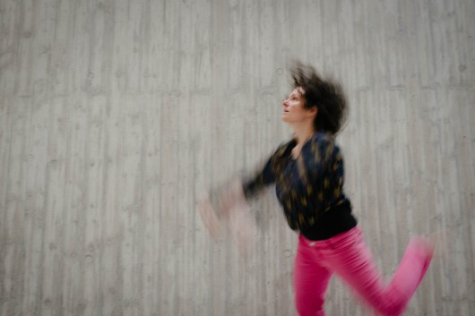

Wochenend-Workshops

Fotocredits: He Shao Hui
Neue Workshoptermine Wintersemester 2021/22: 13./14.11.2021 "Comics and Dance" mit maRia Probst und Susanne Hochreiter 22./23.1.2022: "Contact Flying Skills" mit Christian Apschner "Comics and Dance" – open level 13./14.11.2021 / 10-17h (ca 1,5h Mittagspause) mit maRia Probst und Susanne Hochreiter hybrid event (Zoom und gemeinsam im Studio) Dass wir uns in den vergangenen Monate hauptsächlich per Zoom zu Tanzsessions treffen konnten, hatte auch humorvolle Aspekte für uns. Sind die Zoom-Fenster nicht ähnlich den Panels eines Comics? Entsprechen nicht auch manche Möglichkeiten des Mediums Comic, jenen von Zoom? Etwa, dass Details in den Vordergrund rücken, manches begrenzt und durch den Bildrand durchschnitten wird oder unsichtbar, um dann wieder aufzutauchen? Und: Wie funktioniert Comics eigentlich? Eröffnet die Auseinandersetzung mit Comics möglicherweise ein lustvolleres Zusammentreffen von Tanz und digitalen Kommunikationswerkzeugen? Vor allem: Eröffnen uns spezifische Arbeiten bestimmter Comics-Künstler*innen, aber auch die Beschäftigung mit Gestaltungsparametern der Comic-Kunst generell Optionen im pandemischen und postpandemischen tänzerischen Miteinander? Gewinnen wir Distanz mithilfe der Gestaltungsmittel von Comics – durch Rahmen und „Rinnsteine“, durch das Spiel mit Körperformen und -darstellungen, durch ironische (Selbst)Reflexion und Humor? Gelingt es dadurch ein Stück Abstand nehmen zu können zum aktuellen Geschehen und uns dadurch In diesem Sinne erwartet euch an diesem Wochenende:
"Contact Flying Skills" - advanced Sa/So 22./23.1.2022, 10 - 17h (ca 1,5h Mittagspause) mit Christian Apschner plus support (tba) Der rollingpoint Workshop-Klassiker für alle CI-TänzerInnen mit sportlichen Ambitionen! Dieser technikorientierte Workshop lädt bewegungsfreudige CI-TänzerInnen ein, ihr Bewegungsspektrum zu erweitern und sich aufs Fliegen, Fallen und auf akrobatische Elemente einzulassen. Ein Schwerpunkt des Wochenendes wird sein, verschiedene Lifts und Jumps in allen Raumebenen zu üben und Wir stellen eine Verbindung von Athletischem und Meditativem her und lernen durch eine anatomisch gute Körperausrichtung sowie durch Modulation der Körperspannung und Nutzung der Schwungenergie Gewicht körperschonend aufzunehmen und abzugeben. Im Laufe des Lernprozesses eröffnet sich die Für diesen Workshop sind CI-Grund- und Tanzerfahrung sowie gute körperliche und mentale Fitness empfehlenswert.
Teilnahmekosten: ORGANISATORISCHES: Ort: Alle Workshops finden im Prana Yoga-Studio Nr.1, Mariahilferstr. 82, 1070 Wien statt. Bezahlung: Bitte die Kostenbeiträge immer vorab auf unser Konto Stornobedingungen: Bei Abmeldung bis sieben Tage vor dem Workshop wird der gesamte Betrag abzgl. einer Bearbeitungsgebühr von € 10,- zurückbezahlt. 50% Storno bis zwei Tage vor dem Workshop. Am Vortag und Tag des Workshops kein Storno mehr möglich. Es kann aber eine Ersatzperson nominiert werden. Unter sechs TeilnehmerInnen kann der Workshop, auch wenn gegenteilig angeführt, von einer Person angeleitet werden. Anmeldung: ci.rollingpoint@gmail.com Sämtliche rp Angebote werden entsprechend der aktuellen Covid19 Präventionsverordnungen abgehalten. 9./10.10.2021 "From Bodywork into Movement" mit Christian Apschner und maRia Probst 9./10.10.2021 / 10-17h (ca 1,5h Mittagspause) mit Christian Apschner und maRia Probst Berührung ist eine reichhaltige Quelle unsere Bewegungsqualitäten zu verfeinern und zu erweitern. Oft reicht es dabei in einer wohlwollenden Haltung unserer Intuition freien Lauf zu lassen. In diesem Workshop wollen wir dem uns Menschen meist grundlegenden Bedürfnis nach Berührung Raum geben und dieses mit gezieltem Bodywork-Know How aus unseren Berührungs-Fachgebieten Tuina, Trager Psychophysische Integration, Somatische Faszientherapie und Ortho-Bionomy verbinden. Wir möchten zentrale Verbindungen unseres Bewegungssystems wie Atlas-Steiß, Schultern-Hüftgelenke oder die Hand- und Fußgelenke ansprechen, Aspekte unseres sympathischen, parasympathischen, somatischen oder enterischen Nervensystems adressieren und auf unsere Körperflüssigkeiten eingehen. Dabei werden weitere Körperstrukturen wie Haut, Fett und Organe mitbewegt und beeinflusst. Der Fokus an diesem Wochenende liegt darin, diesen Berührungsschatz im Hinblick auf Bewegungsvielfalt, Bewegungsqualität und angemessenem Einsatz von Energie und Kraft zu heben und ihn in unsere tänzerischen Beziehungen sowohl in der Contact Improvisation wie auch in der freien Improvisation Der Workshop lädt sowohl Nicht-Contact Improvisation TänzerInnen als auch Contact Improvisation TänzerInnen zum Mitmachen ein. RÜCKBLICK: 22./23.8.2020 "Gravity Based Dialogs" Die Schwerkraft verbindet uns mit der Erde und wirkt in jedem Moment auf uns. Unser Körper ist bestens dafür ausgestattet, der Schwerkraft nachzugeben, ihr zu widerstehen und sich mit ihr zu koordinieren. In unserem Workshop lenken wir die Wahrnehmung gezielt auf Nuancen von Gewichtsübertragung an PartnerInnen und Boden. Wir lernen die Schwerkraft als Kommunikationsmedium und Bewegungsantrieb zu nutzen und um mit unseren TanzpartnerInnen zu kooperieren. Techniken einander Gewicht abzugeben und aufzunehmen, aneinander zu lehnen, uns abheben, fallen und auffangen zu lassen sind zentrale Aspekte des Workshops. Unsere Körper bewegen sich entlang eines gemeinsamen Kontaktpunkts fort. Das Augenmerk auf das fasziale wie auch das knöcherne Skelett wird uns dynamisch ankern und in den Raum tragen. Im zeitgenössischen Tanz und in der Improvisation stellen wir räumliche Bezüge her und gestalten einen gemeinsamen Bewegungsraum des wechselseitigen Miteinanders im Feld der Schwerkraft. Die körperlich-, seelisch- mentalen Erfahrungen des Ausnahmezustandes der letzten Monate dürfen dabei mit in Bewegung kommen. 22.- 24.1.2021 "Contact Flying Skills"
Contact for Health, Growth and Fun - beginner Sa 14.3.2020 14.30 - 18.00 h In dieser Reihe liegt unser Augenmerk auf dem körpergerechten Tanz. Wir lassen unser fundiertes somatisches Wissen einfließen um Contact Improvisation von Grund auf gesundheitsfördernd und als Mittel für kontinuierliches, lustvolles Lernen am und über den Körper einzuführen. Inhalte des Workshops sind u.a. zu lernen am Boden zu rollen, gegenseitig Gewicht zu nehmen und -abzugeben sowie dem Bewegungsfluss des rollenden Kontaktpunktes zu folgen. Nicht zuletzt steht die Freude an der Begegnung und Bewegung unter Berücksichtigung verschiedenster Voraussetzungen im Vordergrund.
Organic Movement - Spring Dynamics Sa/So 4./5.4.2020, 10.00-17.00 Organisch-belebt, vital, leibhaftig, dynamisch und erdend zugleich.... In Spring Dynamics widmen wir uns besonders der Organe der Rumpfmitte. Leber, Gallenblase, Milz, Magen, Bauchspeicheldrüse stehen in der chinesischen Medizin für auf den ersten Blick Gegensätzliches wie: Ausdruck, gestalten und handeln, wie auch für Mitte und "in sich ruhen". Der Frühling ist im Sinne der chinesischen Lehre zur Gesunderhaltung der Zeitpunkt schlechthin sich solcherart Dynamiken zu zuwenden und darin Ressourcen für Bewegung und Ausdruck zu finden. An diesem Wochenende wollen wir den Organen in ihrem jeweiligen aktuellen Zustand, Raum geben sich auszudrücken. Oft sprechen sie über Bewegung und Klang, gerne auch über Bilder oder Assoziationen. Wir werden den oberen und unteren Organen des Rumpfes Richtung geben, damit Raum für die Rumpfmitte generieren und Leichtigkeit in unsere Aufrichtung einladen.
Die aus der Mode geratenen Fähigkeiten des Zuhörens, Wartens, Beobachtens, kultivierend, werden wir uns in vielfältigen Spielformen zu unseren Organen und unseren PartnerInnen in Bezug setzen, den Magen knurren und die Leber tanzen lassen und Begegnung mit sich selbst einladen.
Liquid Motion, Embodiment, Contact Improvisation Sa/So 6./7.6.2020 10.00-17.00
Contact Flying Skills - intermediate/advanced Sa/So 25./26.1.2020, 10.00 - 17.00h Dieser technikorientierte Workshop lädt bewegungsfreudige CI-TänzerInnen ein, ihr Bewegungsspektrum zu erweitern und sich aufs Fliegen, Fallen und auf akrobatische Elemente einzulassen. Ein Schwerpunkt des Wochenendes wird sein, verschiedene Lifts und Jumps in allen Raumebenen zu üben und kopfüber auf den Händen zu tanzen. Wir stellen eine Verbindung von Athletischem und Meditativem her und lernen durch eine anatomisch gute Körperausrichtung sowie durch Modulation der Körperspannung und unter Nutzung der Schwungenergie Gewicht körperschonend aufzunehmen und abzugeben. Im Laufe des Lernprozesses eröffent sich die Fähigkeit, sich dem gemeinsamen Bewegungsfluss hinzugeben und gleichzeitig den gemeinsamen Tanz so präsent wahrzunehmen, so dass dieser Fluss spielerisch gelenkt werden kann. Für diesen Workshop sind CI-Grund- und Tanzerfahrung sowie gute körperliche und mentale Fitness empfehlenswert. Contact Improvisation and Kinetic Flow - open level (Sa/So 12./13.10.2019, 10.00 - 17.00h) Wer sie schon einmal erlebt hat, möchte sie nicht mehr missen. Diese Momente des völligen Aufgehens in einer Tätigkeit, in denen unser Fühlen, unser Wollen und unser Denken in Übereinstimmung sind. Die CI als eine der Königs-Disziplinen der absichtsvollen Absichtslosigkeit, geankert im körperlich-tänzerischen Empfinden und Handeln, ist ein taugliches Vehikel für diese kostbaren Momente. Flow-Erleben ist ein „Widerfahrnis― ähnlich wie Schlafen. Wir können es nicht erzwingen, aber es ist möglich die Bedingungen so zu gestalten, dass die Wahrscheinlichkeit für Flow-Erlebnisse steigt. Die CI, in der Physikalität, Kommunikation und Verspieltheit in unerwarteter und kreativer Weise aufeinander treffen, hat das Flow-Potential grundgelegt. An diesem Wochenende wollen wir uns diesen, der Form innewohnenden Aspekten, widmen. Wir werden unsere Aufmerksamkeit auf Mikro-Bewegungen lenken, die Wahrnehmungsfähigkeit erweitern und auf den Kopf stellen, uns so nehmen wie wir sind und uns auch physisch herausfordern. Wir werden den „small dance“ tanzen, dranbleiben, los- und geschehen lassen. Vom ersten Moment an werden wir das Unbekannte einladen, der Wahrnehmung des eigenen Körpers und der Schwerkraft vertrauen, auf unseren Instinkt und unsere Intuition setzen und dem Tanz im Hier und Jetzt Raum geben.
Organic Movement - die Organe als Ressource für Aufrichtung, Bewegung und Ausdruck - open level Sa/So 23./24.11.2019, 10.00 - 17.00h Organic Movement - die Organe als Ressource für Aufrichtung, Bewegung und Ausdruck - open level Organisch-belebt, vital, leibhaftig, aber auch verworren, verwachsen, schwer zu durchschauen, etwas das im Dunkeln vor sich geht, sich unserer bewussten Einflussnahme entzieht,....solche und ähnliche Zuschreibungen ranken sich um dieses potente Körpersystem. Die meiste Zeit wirken unsere Organe im Unbewussten. Sie spielen zusammen. Ihre Aktivität ist eine der substanziellsten Grundlagen unseres Lebens. Oft passiert die Hauptarbeit der Organe in einer Phase in der wir uns als passiv erleben, schlafen oder ruhen. Bewusst erleben wir die Organe meist erst dann wenn Sie nicht mehr optimal funktionieren oder ihr Zusammenspiel gestört ist. Und dann oft indirekt, nachdem das spezifische Organgewebe selbst über keine Schmerzrezeptoren verfügt, über das fasziale System. An diesem Wochenende wollen wir den Organen in ihrem jeweiligen aktuellen Zustand, Raum geben sich auszudrücken. Oft sprechen sie über Bewegung, Klang, aber auch über Bilder oder Assoziationen. Wir wollen die aus der Mode geratenen Fähigkeiten des Zuhörens, Wartens, Beobachtens, kultivieren, Darmbewegung, Herzrhythmus, Leber-Tonus spüren und dem Füllen und Leeren der Alveolen zuhören. Wir werden die Organe als innere Volumina, die uns in der Aufrichtung unterstützten, kennen lernen und auch ihre Bewegungslust in den Raum hinein und im Dialog mit anderen entdecken. Und nicht zuletzt werden wir dieses reiche Körpersystem und ihre Facetten im Hinblick auf tanz-kompositorische und koordinative Aspekte abklopfen. Wie fühlt sich Organzeit an, welche Art Raum nehmen sie ein, machen sie sichtbar, welche Nuancen von Tanzgesprächen entstehen und wie unterstützen sie uns in komplexeren Bewegungsabläufen. In diesem Sinne steht uns ein Wochenende bevor an dem gewartet, gespielt, gegessen, verdaut, geredet, gehört, herumgekugelt und vor allem organisch getanzt werden darf ________________________________________________________________
SOMMER WOCHENEND-WORKSHOP 24./25.8.2019 / Wien mit maRia Probst und Christian Apschner Sa/So 10.00 - 17.00, Prana Yoga Studio 1, Mariahilferstr. 82/1070 Wien Dieses Wochenende ist für BeginnerInnen und CI-TänzerInnen mit geringen CI-Vorerfahrungen, z.B. aus Jams gedacht. Wir möchten einen Rahmen schaffen, in dem die zentralen Grundprinzipien und handfesten bewegungstechnischen Skills der Contact Improvisation vermittelt werden. "Contact Motherland" heisst für uns aktiv wahrnehmen, Gewicht abgeben, aufnehmen und dosieren können, mit dem rollenden Kontaktpunkt tanzen und damit spielen können, sich lehnen und fallen zuzutrauen, mit Angeboten im Tanz wie dem "low table" und "high table" umzugehen und vieles mehr. Im Contact motherland anzukommen erweitert unsere Bewegungsmöglichkeiten im Improvisieren, gibt Sicherheit im freien CI-Tanzen auf Jams, macht meistens viel Freude und generiert Bewegungslust.
Contact Improvisation + Jam Fundamentals I + II / beginner So 24.3. und 7.4.2019, 15.30 - 18.15h In diesen beiden Workshops führen wir in die Spürwelt der Contact Improvisation ein und vermitteln in komprimierter Form die wichtigsten Basics, vor allem im Hinblick auf das gegenseitige Abgeben und -nehmen von Körper(teil)gewichten). Die TeilnehmerInnen der Workshops sind herzlich dazu eingeladen, an der nachfolgenden rollingpoint-Jam teilzunehmen. Contact Jams sind ein faszinierender Ort zur gemeinsamen Contact Improvisations-Praxis, die vor allem auf CI-Beginner eine magische Anziehung ausübt. Folgende Inhalte stehen im Fokus der beiden Termine: So 24.3.: Am Boden und mit PartnerInnen rollen, Spiralbewegungen und Ebenenwechsel, Gewichtsdosierung und -verlagerung, Sicherheitsaspekte im gemeinsamen CI-Tanz So 7.4.: Gestaltungsmöglichkeiten von Tänzen, Contact-Tänze beginnen und beenden, Bewegung durch den Raum, Rollen, Gleiten, Körperreflexe, Fallen und sicher landen lernen
Moving in Spirals / open level Überall in der Natur vom kleinsten Baustein bis hin zum gesamten Universum ist das Bewegungsprinzip der Spirale verbreitet. Die Architektur des menschlichen Körpers ist ein Erbe evolutionärer Prozesse mit ozeanischem Ursprung. Spiralbewegungen können von verschiedensten Körperteilen aus initiert werden und betreffen Flüssigkeiten, Muskeln, Knochen, Bindegewebe und Organe. An dem Wochenende lernen wir verschiedenste Variationen von ganz kleinen bis sehr großen Spiralbewegungen im Liegen, im Stehen und in räumlicher Fortbewegung im Detail kennen und vertiefen diese. Wir kreieren Bewusstheit darüber wie Spiralbewegungen in sequenzieller Form durch den Körper durchlaufen und wie mühelos Fortbewegung dadurch wird, wenn wir die Zugverbindungen des Fasziensystems wirken lassen. Hands-On-Kontakt, Elemente von Contact Improvisation und anatomische Vorstellungsbilder helfen uns ein besseres Verständnis für unsere Körperarchitektur zu gewinnen. Es wird meditative Phasen geben sowie Phasen die durch spezielle ausgewählte Musik und Soundscapes unterstützt werden um Synästhesien bzw. intermodale Zusammenhänge zwischen verschiedenen Sinnsesebenen (taktil, kinästhetisch, auditativ, visuell) zu erfahren. In einem inneren Schwebezustand zwischen Kontemplation und Aktivierung können wir somit das Gelernte und heilsame Erfahrungen in unser Selbst- und Körperbild integrieren. Die erlernten Spiralbewegungen erweitern unsere Bewegungsmöglichkeiten im Contact Improvisations-Tanzen, im freien Tanzen und in Alltagsbewegungen.
WINTERSEMESTER 2018/19: „Lifts, Jumps and Flying Skills“ Dieser technikorientierte Workshop lädt bewegungsfreudige CI-TänzerInnen ein, ihr Bewegungsspektrum zu erweitern und sich aufs Fliegen, Fallen und auf akrobatische Elemente einzulassen. Ein Schwerpunkt des Wochenendes wird sein, verschiedene Lifts und Jumps in allen Raumebenen zu üben und kopfüber auf den Händen zu tanzen. Wir stellen eine Verbindung von Athletischem und Meditativem her und lernen durch eine anatomisch gute Körperausrichtung sowie durch Modulation der Körperspannung und unter Nutzung der Schwungenergie Gewicht körperschonend aufzunehmen und abzugeben. Im Laufe des Lernprozesses eröffent sich die Fähigkeit, sich dem gemeinsamen Bewegungsfluss hinzugeben und gleichzeitig den gemeinsamen Tanz so präsent wahrzunehmen, so dass dieser Fluss spielerisch gelenkt werden kann. Für diesen Workshop sind CI-Grund- und Tanzerfahrung sowie gute körperliche und mentale Fitness empfehlenswert.
„Gravity Based Motion Poetry - Sound and Music“ mit maRia Probst ACHTUNG: Anmeldung bis Sa 6.10.18 Zeitgenössischer Tanz ist ein wunderbares Medium sich in verschiedensten Facetten im Dialog mit sich den PartnerInnen und dem Raum zu erleben. In Gravity Based Motion Poetry bilden tänzerische Grundelemente wie Kraft aus der Mitte abgestimmt mit der Körperperipherie, Gespür für Ausrichtung, Schwung im Zusammenspiel mit unseren Gelenken und Organen, Sprungkraft unterstützt von unserem Fasziensystem und mehr, die Basis des Erlebens. Derart physisch geankert, werden wir in die Fülle der Möglichkeiten des tänzerischen Gestaltens und in einen Dialog mit einem zusätzlichen künstlerischen Medium eintauchen. In diesem Workshop lassen wir uns von Musik und Klang bereichern. Dabei werden wir sowohl entlang von Scores (Spielregeln) improvisieren wie auch mit vielerlei Anregung eigene Tanzmotive kreieren. Achtung: Im Zuge dieses Wochenendes kann es durchaus zu modifizierter Zeit-, Raum- und Selbstwahrnehmung kommen. Come and enjoy*
„Soulfood Bodywork and Sensorimotor Rides“ Der Workshop ist sowohl für motivierte BeginnerInnen als auch für erfahrene CI-TänzerInnen empfehlenswert. Die Verbindung von Körperarbeit mit CI ermöglicht BeginnerInnen einen körpergerechten Einstieg ins CI-Tanzen. Fortgeschrittenen TänzerInnen erlaubt der Zugang das gezielte Erlernen von Bodywork-Techniken sowie eine Verfeinerung der Bewegungs-, Spür- und Kontaktqualitäten. In den Bodywork- und Hands-On Phasen verwenden wir Techniken von Trager-Psychophysischer Integration®, Ortho-Bionomy®, Body Mind Centering, Tuina, somatische Faszientherapie u.a. Körperarbeitsmethoden. Fokus ist es, die feinen Körper-Spürqualitäten zu wecken und Knochen- und Faszienverbindungen anatomisch sinnvoll so anzusprechen, so dass wir uns mühelos, geschmeidig und mit möglichst wenig Kraftaufwand im Feld der Schwerkraft fortbewegen können. Derart mit angenehmen Körperinformationen genährt ("Soulfood Bodywork") übertragen wir diese taktilen und sensomotorischen Fähigkeiten ins Contact Improvisations-Tanzen. Wir beziehen uns auf die Grundprinzipien der CI wie Gewichtsverlagerung, Elastiziät und "Rebound" und verwenden konkrete Bewegungsabläufe ("Sensorimotor Rides") um unser gemeinsames Bewegungsverhalten spielerisch zu erforschen und zu optimieren. Die Freude am kinästhetisch-sensomotorischen Erleben trägt uns durch unsere tänzerischen Begegnungen und eröffnet einen Raum für individuelles und kollektives Lernen. |